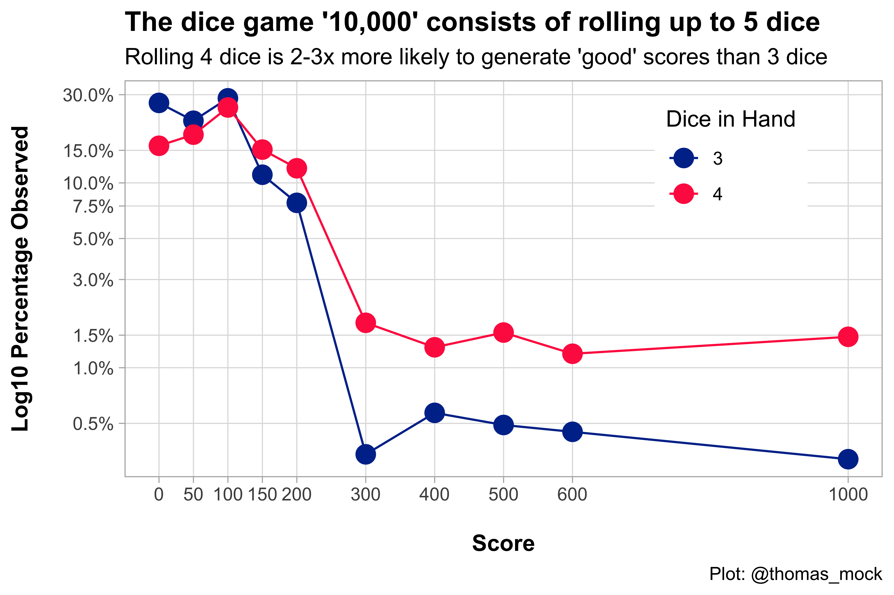

Been following Dave Robinson’s Tidy Simulation Series in #rstatsand decided to try and give it a go.
We play a dice game called “10,000” in my wife’s family. The family of games also includes Ten Grand, Farkle, Zilch, and others according to Wikipedia - with the common thread being that you have 5-6 dice, roll them, and add up scoring dice until you stop with a set score or “zippy”, which is a roll with zero scoring die.
Basic gist: - Roll 5 dice - If you “score” with at least one die, you can stay or keep rolling - If you roll zero scoring die, you lose your turn
A basic scoring table can be seen below.
Warning: `columns = TRUE` has been deprecated in gt 0.3.0:
* please use `columns = everything()` instead
Scoring Table for '10,000'
Roll
Score
Each 1
100
Each 5
50
3 x 1
1,000
4 x 1
5,000
5 x 1
10,000
3 x n
n * 100
4 x n
n * 200
5 x n
n * 300
Short Straight
(1:5, 2:6)
1000
You add all the scores up so rolling 5 die for example:
You could get 3 x 1 (1000), a 4 (0), and a 5 (50
This gets you 1050, with 1 die in hand (1x 4 doesn't score)
We played 10,000 on New Year’s Day, and we had a disagreement about if you have 2/5 scoring die whether to roll 3 or 4.
I’ve literally never done probability math EVER… but I felt that it was more effective to roll 4 than 3.
So I attempted to simulate rolls in #rstats!
Simulating 10,000 rolls
So we need to create a dataset of possible rolls, and how common these are when randomly created. We’ll set a seed so that we can reproduce the code, and for puns sake we’ll roll the dice 10,000 times to match our game’s title.
Importantly, we also will be breaking this down into 5x 10,000 samples which is: - Rolling 1 dice all the way to rolling 5 dice (max possible).
tidyr::crossing() takes multiple vectors and creates a tibble of all the possible combinations. Thus we can use it to generate the number of dice in hand along with our 10,000 simulations per number of dice in hand. Our toy example below shows the expected behavior, and then we’ll assign the rolls to a stored dataframe.
# Toy example# 1 to 5 dice in hand x 5 trials/per dice group = 25 observationscrossing(
dice_in_hand =seq(1, 5, 1),
trial =1:5)
For, the actual dataframe we’ll do an additional step, which is creating a vector of rolls with random sampling based on how many dice are in hand. For our 1:5 dice in hand + 10,000 samples per dice in hand we get 50,000 simulations.
set.seed(37)n_rolls<-10000# Generate a sample of rolls (10000 sims)dice_rolls<-crossing(dice_in_hand =seq(1, 5, 1),
trial =1:n_rolls)%>%mutate(roll =map(dice_in_hand, ~sample(1:6, ., replace =TRUE)))dice_rolls
We can take a look at a few of these simulations. In this case, I’ll grab a random trial and see what we got for each of the dice in hand (1, 2, 3, 4 or 5).
Now that we have a sense of our 10,000 simulations and our possible outcomes we need to generate some logic for scoring! We could simply count observations, but that won’t tell us the whole story.
Counting & Scoring functions
I tried this several ways but ended up sticking with vectors. The goal was to have programmatic logic to convert raw dice rolls like 1, 1, 3, 4, 1 to 1,000 (3x 1 = 1,000, 3 and 4 do not score).
Step 1: Convert raw rolls to counts
We need to take the raw rolls (1, 1, 3, 4, 1) to counts of each number. I created a counting function which now tells us how many of each possible dice side (1, 2, 3, 4, 5, 6) there are.
A test example can be seen below. The output can be read as One 1, One 2, Three 3, Zero 4, Zero 5, and Zero 6. We can then feed this into our downstream functions to get scoring.
There are actually many steps to this, but the bulk of it is just logical matching potential outcomes to observations. Each type of scoring (number of ones, number of fives, short straights, triples, quadruplpes, and quintuples) has it’s own check, and then I add the scoring at the end based on the various combos/inputs. Using the same input as our previous example, we should get a total score of 400, which is One 1 at 100 points, and Three 3s at 100 * face value (100 x 3).
# TOO much logic to get actual scoresrigid_scoring_function<-function(dice_in){dice_side<-c(1:6)n_of_ones<-sum(dice_in[1])n_of_fives<-sum(dice_in[5])straight_one<-c(1, 1, 1, 1, 1, 0)straight_two<-c(0, 1, 1, 1, 1, 1)straight<-any(all(dice_in==straight_two), all(dice_in==straight_one))score_fives<-if_else(n_of_fives<=2&straight==FALSE,
(n_of_fives*50),
0)score_ones<-case_when(n_of_ones<=2&straight==FALSE~(n_of_ones*100),
n_of_ones==3~1000,
n_of_ones==4~5000,
n_of_ones==5~10000,
TRUE~0)three_or_more<-sum(dice_in>=3)three_or_more_subset<-dice_in>=3multiply_dups<-case_when(sum(dice_in==3)==1&n_of_ones<3~1L,
sum(dice_in==4)==1&n_of_ones<3~2L,
sum(dice_in==5)==1&n_of_ones<3~3L,
TRUE~0L)multi_score<-ifelse(three_or_more==TRUE,
dice_side[three_or_more_subset],
0)*100*multiply_dupsstraight_score<-if_else(straight==TRUE, 1000, 0)three_or_more<-any(dice_in>=3)total_score<-sum(score_ones+multi_score+straight_score+score_fives, na.rm =TRUE)total_score}
Get scoring from the sample
Generating the scores is actually extremely simple now, the hard part was defining the logic above!
We use purrr::map() to generate a vector of the rolls using our counting_function(), and then get a score using purrr::map_dbl() to call our rigid_scoring_function() on each vector input of the die rolls! This will take about 15 seconds for calculating scores across the 50,000 total observations.
# Generate the actual scoring from existing sampledice_df<-dice_rolls%>%mutate(
dice_vector =map(roll, counting_function),
rigid_scoring =map_dbl(dice_vector, rigid_scoring_function))# sanity check the scoring to get a few different scoresdice_df%>%select(dice_in_hand, rigid_scoring)%>%sample_n(10)
Now that we have the outcome scoring, we can see how the probabilities stack up! Our thesis was that rolling 4x die was more likely to get you both a better score AND less likely to zippy out or get zero. We can see that rolling 4x die vs 3x die is about half as likely to get zero (15% vs 30%) and 2-3x more likely to get good scores (300 to 1,000).
Success! If you roll 5 die, get 2 scoring die, it makes sense to only keep 1 of those scoring dice and and roll the other 4!
Please note that I chose a specific set of scores (0, 50, 100, 150, 200, 300, 400, 500, 600, 1000) - as they are possible to get with either 3 or 4 die. There are scores in between 600 - 1000 that can only be achieved with 4 - 5 die in hand so it didn’t make sense to plot them against 3 die.
# Quick plotprob_plot<-dice_df%>%filter(dice_in_hand%in%c(3, 4))%>%filter(rigid_scoring%in%c(0, 50, 100, 150, 200, 300, 400, 500, 600, 1000))%>%count(rigid_scoring, dice_in_hand)%>%mutate(
freq =n/n_rolls,
dice_in_hand =factor(dice_in_hand))%>%ggplot(aes(x =rigid_scoring, y =freq, color =dice_in_hand))+geom_path(aes(group =dice_in_hand))+geom_point(size =4)+scale_y_log10(labels =scales::percent, breaks =c(0.005, 0.01, 0.015, 0.03, 0.05, 0.075, 0.1, 0.15, 0.3))+scale_color_manual(
name ="Dice in Hand",
values =c("#003399", "#ff2b4f", "#fcab27"))+scale_x_continuous(breaks =c(0, 50, 100, 150, 200, 300, 400, 500, 600, 1000))+theme_light()+theme(
panel.grid.minor =element_blank(),
legend.position =c(0.8, 0.8),
plot.title =element_text(face ="bold"),
axis.title =element_text(face ="bold"))+labs(
x ="\nScore",
y ="Log10 Percentage Observed\n",
title ="The dice game '10,000' consists of rolling up to 5 dice",
subtitle ="Rolling 4 dice is 2-3x more likely to generate 'good' scores than 3 dice",
caption ="Plot: @thomas_mock")prob_plot

We can finally also show the total observations for all possible combinations for rolling 3 or 4 die.
Warning: `columns = vars(...)` has been deprecated in gt 0.3.0:
* please use `columns = c(...)` instead
Warning: `columns = vars(...)` has been deprecated in gt 0.3.0:
* please use `columns = c(...)` instead
All possible scores and frequencies for 3-4 die in hand